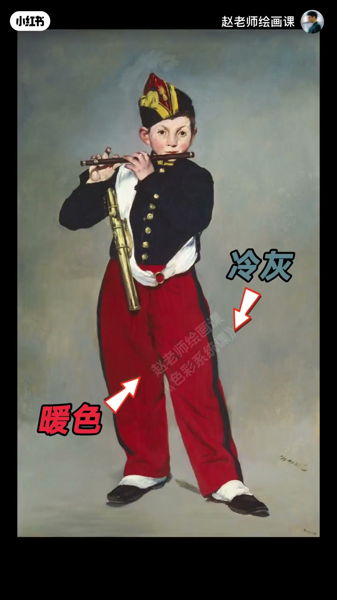
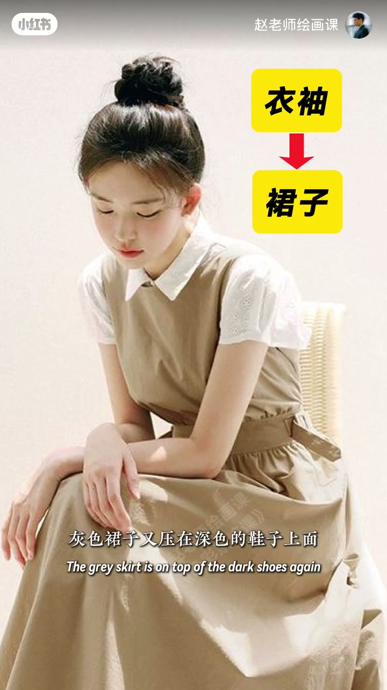
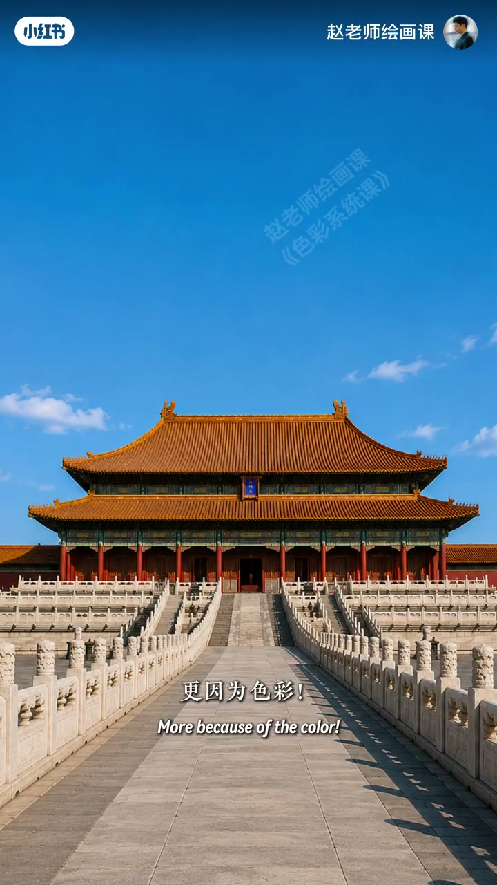

内容要点
蓝底黄点像浮起，黄底蓝点像挖洞——同为黄蓝，空间感相反，答案是色彩透视（色彩进退感）。暖易前冷易后：莫奈日出印象太阳从蓝灰海雾浮出；人物衣暖景冷、近树暖远山冷可拉空间。明度：白领压卡其再压深鞋也有层次。纯度：高纯在前低纯退后，室内拉墙画沙发纯度差显宽敞。厉害在冷暖、明度、纯度同时发力——紫禁城蓝天退、金顶浮、红墙近、汉白玉最近，气势来自色彩空间。
知识结构
黄浮蓝陷；暖进冷退。
叠压层次；高纯在前。
紫禁城四层空间。
远近不只靠透视线条：用冷暖、明度、纯度的进退关系叠出空间。
00:00-00:59冷暖造成的进退
蓝底黄点浮在蓝上；反过来黄底蓝点像被挖出洞。答案是色彩透视，即色彩带来的视觉进退感。莫奈《日出印象》太阳像从蓝灰海雾浮现：暖色更易前走，冷色更易后退。
人物画衣暖、背景冷灰，人与背景自然有空间；风景近树偏暖远山偏冷，距离马上拉开。00:08／00:45。

00:59-01:50明度与纯度也能造空间
除了冷暖，明度也能制造空间：白色衣领袖子像叠在卡其裙上，卡其又压在深色鞋上，配色不复杂仍舒服有层次感。纯度同样：高纯衣服更抢眼视觉在前，低纯自然退后——不必里三层外三层也有层次。
室内让墙面、挂画、沙发拉开纯度差距，空间更显宽敞。01:10 明度叠压。

01:50-02:34三法同时：紫禁城
真正厉害从不只一种方法，而是冷暖、明度、纯度同时发力。紫禁城气势磅礴不只因为大，更因为色彩：蓝天退后，金黄屋顶向前浮起，高纯红墙拉近视线，宽阔明亮汉白玉栏杆与广场成最近一层。
从天空到建筑再到地面，视线由远及近，整座宫殿仿佛从天地间缓缓浮现。下期聊色彩如何操控心理。02:00。

完整转录（64段）
以下文本由 Whisper medium 模型自动转录，可能存在少量识别误差，已尽可能修正。
蓝色背景放上一个黄色圆点
黄点好像浮在蓝色上面
如果反过来
黄背景上的蓝点
反而像是被发出了一个洞
明明都是黄和蓝
为什么空间感完全相反
答案就是色彩透视
也就是色彩带来的视觉进退感
来看默奈的日出印象
为什么画中的太阳
像从蓝灰色的海雾中浮现出来了
因为暖色视觉上更容易感觉向前走
而冷色更容易看起来向后退
在融合画中
衣服穿暖色
背景用冷灰
人就可以自然地和背景产生空间感
风景画中让近处的树林偏暖
远山则偏冷
空间距离马上就会被拉开
这就是用色彩冷暖表现空间的方法
除了冷暖
明度也能制造空间关系
白色的衣领和袖子
看上去像是叠压在卡其色裙子的上面
而卡其裙子又压在深色的鞋子上面
所以虽然没有复杂的配色
依然会看起来舒服
而且有藏字感
而纯度一样可以拉开距离
比如高纯度的衣服会更吸引眼球
随视觉空间在前
而低纯度自然退后
所以你不用穿的里三层外三层的
一样可以看起来很有层次感
在室内设计中
让墙面
挂画
沙发
拉开纯度差距
空间就会显得更加宽敞
这就是色彩透视的三种技巧
其实真正厉害的
可从来不只是一种方法
而是冷暖 明度 纯度同时发力
比如我们的紫禁城
为什么它总能给人一种气势磅礴的感觉
不是因为大
更因为色彩
蓝色的天空往后退远
金黄色的屋顶向前浮起
高纯度的红墙把视线拉近
而宽阔明亮的汉白玉栏杆和广场
成了离你最近的一层空间
从天空到建筑再到地面
视线由远即近
整座宫殿仿佛从天地之间缓缓浮现
宏大庄严 气势磅礴
这就是色彩透视的力量
下一期我们继续聊聊
色彩究竟是如何操控你的心理的
我们下期再见
拜拜